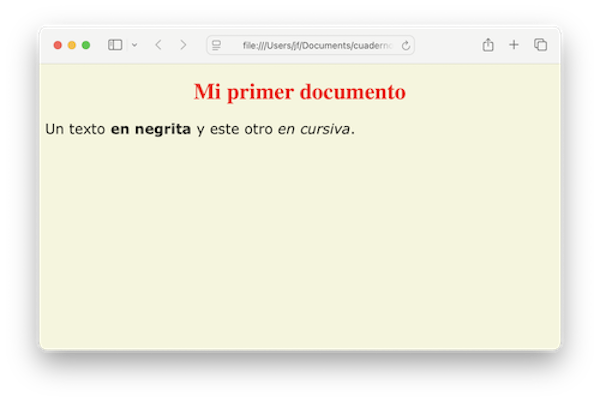

Atributos y estilos¶
El ejemplo visto en el capítulo anterior es muy sencillo. En el mundo real, los elementos de una página web se suelen configurar para lograr una presentación más sofisticada. Para ello, podemos modificar los atributos de cada elemento, así como aplicar reglas de estilo.
Atributos¶
Todo elemento de una página tiene unos atributos que se pueden modificar. Se hace en la etiqueta de apertura:
<p title="texto de ayuda">
Pasar el ratón sobre este párrafo sin pulsar el ratón, y esperar a que se despliegue automáticamente
un texto de ayuda.
</p>
Lo que muestra:
Pasar el ratón sobre este párrafo sin pulsar el ratón, y esperar a que se despliegue automáticamente un texto de ayuda.
El atributo title es común a muchos elementos web, y permite mostrar un texto emergente cuando se pasa el ratón por encima (sin pulsar). Otros elementos tienen atributos que son típicos de cada clase de elemento.
En líneas generales, la sintaxis para establecer los atributos en la etiqueta de apertura es:
<etiqueta atributo1="valor1" atributo2="valor2">
Los atributos se escriben separados por espacios en blanco, y cada uno en formato nombre="valor". Es común, aunque no obligatorio, entrecomillar los valores.
En el formato markdown las opciones de configuración son reducidas, pero la posibilidad de insertar etiquetas HTML, nos da más posibilidades. En este capítulo nos centraremos en el formato HTML.
Hojas de estilo¶
Además del uso de atributos, la presentación y aspecto de una página se configura principalmente con reglas de estilo. Las hay de tres tipos:
- las reglas de estilo definidas en la sección
<head>del documento. - las reglas de estilo definidas en fichero aparte, que afectan a todas las páginas del proyecto.
- las reglas de estilo definidas en la etiqueta de apertura de un elemento concreto.
A los ficheros con reglas de estilo se les llama hojas de estilo. Son archivos plain text con extensión `.css"
El contenido puede ser algo así como:
body {
background-color: beige;
}
h1 {
color: red;
text-align: center;
}
p {
font-family: verdana;
font-size: 20px;
}
Cada regla está formada por:
- un selector,
p,h1,body, etc, que indica a que elementos se va a aplicar - un conjunto de propiedades de estilo, delimitadas cada una por un punto y coma, y todo ello entre llaves
{} - cada propiedad se escribe en formato
propiedad:valor
En el ejemplo, establecemos un color de fondo para todo el documento (body), color de texto y alineamiento para los párrafos de cabecera de nivel 1, y tipo de letra y tamaño para los párrafos en general. Guardemos este archivo como prueba.css.
Vamos a recuperar nuestro archivo prueba.html. En la sección <head> de cada documento HTML enlazamos con el archivo CSS usando una etiqueta <link>, que establece el archivo adjunto que hay que descargar. El atributo "rel" indica el tipo de archivo, y el atributo "href" el nombre de la hoja de estilos:
<head>
<link rel="stylesheet" href="prueba.css">
</head>
prueba.html
<!DOCTYPE html>
<head>
<link rel="stylesheet" href="prueba.css">
</head>
<html>
<body>
<h1>Mi primer documento</h1>
<p>Un texto <b>en negrita</b>
y este otro <i>en cursiva</i>.
</p>
</body>
</html>
Con estos dos archivos, prueba.html y prueba.css, al pulsar sobre el primero veremos:

Si creamos nuestro sitio web en formato markdown y obtenemos los archivos HTML con MkDocs, nos daremos cuenta que este incluye su propia hoja de estilos en el resultado final. Más adelante veremos como añadir las nuestras propias. También podremos incluir etiquetas HTML en el texto markdown, lo que nos permite personalizar atributos y reglas de estilo para un elemento concreto.
El atributo style¶
El atributo style de un elemento individual permite asignarle reglas de estilo particulares:
<p title="texto de ayuda" style="color:red;text-align:center" >
Pasar el ratón sobre este párrafo en color rojo.<br>
Se desplegará automáticamente un texto de ayuda,
sin pulsar el ratón.
</p>
Lo que muestra:
Pasar el ratón sobre este párrafo en color rojo.
Se desplegará automáticamente un texto de ayuda,
sin pulsar el ratón.
El formato del atributo style es:
<etiqueta style= " propiedad1:valor1 ; propiedad2:valor2 " >
Como sucede con el resto de atributos, aquí escribimos atributo="valor", siendo el valor el conjunto de reglas de estilo, separadas por un punto y coma, en formato nombre:valor, y todo ello entre comillas, formando un texto que es lo asignado al atributo style.
Algunas propiedades comunes:
color: black- determina el color del textobackground-color: white- color del fondofont-family: Arial- fuente de letrafont-style: italic- letra cursivafont-weight: bold- letra en negritatext-align: center- texto centradofont-size: 2em- tamaño doble de letra
CSS
Las propiedades de estilo siguen una sintaxis denominada CSS, que es un estándar complementario de HTML. Las capacidades del lenguaje CSS cubren todas las necesidades de una página web, y la descripción de estas reglas va más allá del propósito de este cuaderno. Existen numerosos tutoriales CSS y HTML en la red.
Clases¶
Dada una hoja de estilos, ¿como aplicar una regla a determinados elementos y a otros no? Una solución es declarar que un elemento pertenece a una clase, y en la hoja de estilos, indicar las reglas aplicables a los elementos de esa clase.
Para asignar un elemento a una clase, usar el atributo class. Por ejemplo, supongamos que todos los elementos que queremos que vayan en color rojo los definimos como pertenecientes a la clase "rojo":
<h1 class="rojo">Título del documento</h1>
<p class="rojo">Texto regular.</p>
Y en la hoja de estilos definimos las propiedades de los elementos de esa clase, cuyo nombre se escribe con un punto de prefijo:
.rojo {
color: red;
}
Si queremos que solo sea aplicable a los párrafos de cabecera, por ejemplo, en la hoja de estilos escribimos:
h1.rojo {
color: red;
}
Y el resto de elementos de la clase "rojo" no se verán afectados.
Un elemento puede pertenecer a varias clases, que se especifican entre las comillas, y separadas por un espacio en blanco:
<p class="rojo importante">Texto regular</p>
Identificadores¶
En una hoja de estilos podemos hacer referencia a un elemento concreto (por ejemplo, un párrafo) utilizando su nombre, precedido por un símbolo #:
#parrafo1 {
text-align: center;
color: red;
}
Debemos "bautizar" el elemento usando su atributo id:
<p id="parrafo1"> Texto centrado y en rojo </p>
Estos identificadores tienen otras utilidades. Por ejemplo, podemos crear un enlace a otra parte del documento, utilizando el nombre del párrafo enlazado como destino. Lo veremos en su momento.